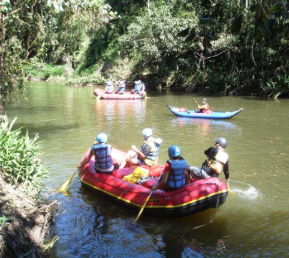
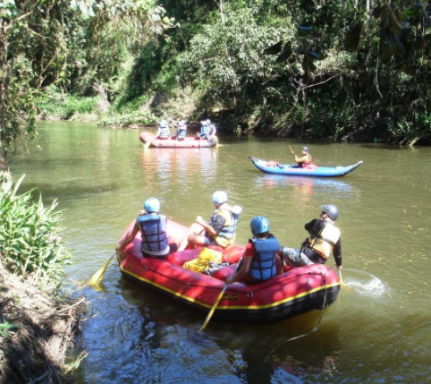
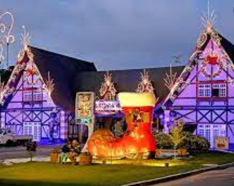
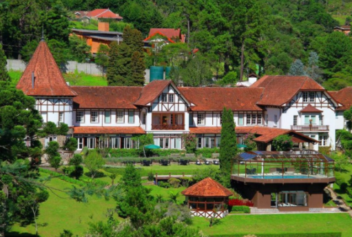
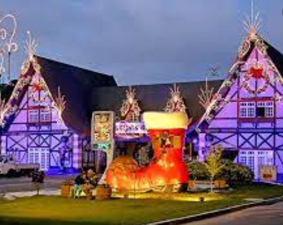
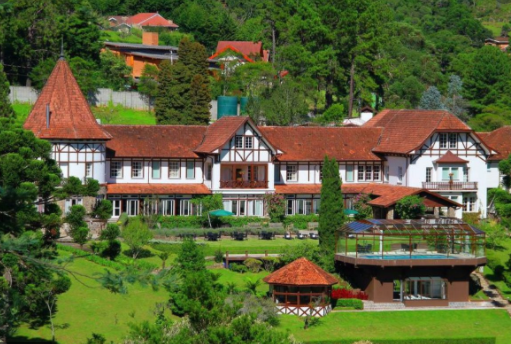
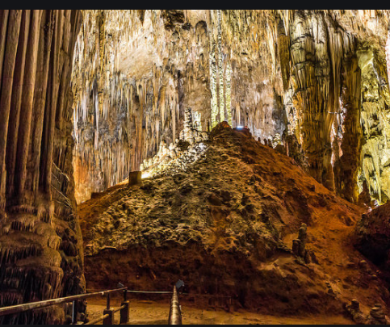
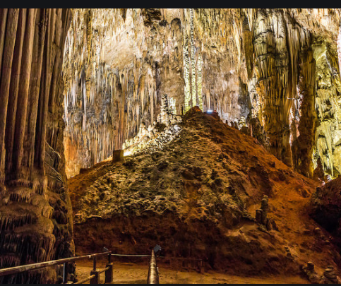
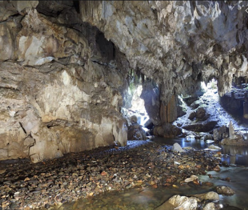
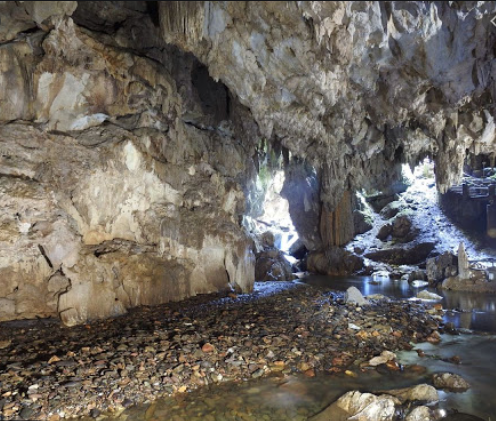

Partiu interio de São Paulo aventura ou relaxar, casal ou família, você escolhe como vai ser seu final de semana.
Conheça um pouco mais dos Pontos turísticos de SÂO PAULO CLICK AQUI E :Conheça muito mais sobre o interio de São Paulo
SOCORRO - SP ( Localizado próximo a Campinas, este e um perfeito lugar para se curtir do relaxameto até a aventura extrema ).
VISITAR A GRUTA DO ANJO Antiga mina de extração de quartzo desativada em 1995, a gruta sofreu infiltrações que criaram uma grande piscina natural que chega a ter 4 metros de profundidade em alguns trechos e agora é repleta de peixinhos. Não é possível mergulhar, mas os visitantes podem andar de pedalinho e admirar o visual encantador com a água translúcida que atravessa a formação rochosa. A gruta, inclusive, já serviu de locação para filmagens da novela Império, de 2014, da Rede Globo.
VER O PÔR DO SOL NO MIRANTE DA PEDRA DA BELA VISTA Ponto turístico mais alto da cidade, a Pedra da Bela Vista tem um visual maravilhoso durante o pôr do sol. O céu fica laranja enquanto músicos tocam ao vivo e o clima tranquilo impera. É possível relaxar beliscando petiscos no restaurante ao lado que oferece pizza na pedra, linguiças na chapa e o famoso pan de palo que você assa na hora. Para os mais aventureiros, o local também conta com o maior rapel da cidade, de 98 metros de altura. Dica: programe-se para estar a caminho pelo menos uma hora antes do pôr do sol para conseguir chegar a tempo, pois a estrada é de terra e bem esburacada.
PEDRA BELA-SP ( A maior tirolesa do Brasil ).


Pequena cidade do interior de São Paulo na Serra da Mantiqueira, Pedra Bela é nacionalmente conhecida pelos praticantes de esportes de aventura por abrigar a maior tirolesa das Américas. O percurso que vai do alto da Pedra do Santuário até o Portal da Cidade, oferece uma paisagem de tirar o fôlego. São 1.900m de extensão com velocidade de até 107 km por hora, a uma altura de até 250 metros do chão. Mega adrenalina!
SÃO ROQUE ( Para os amantes do romantismo, um lugar perfeito para casais ).


São Roque é conhecida como a Terra do Vinho pelas dezenas de vinícolas instaladas na região. Não à toa, um dos principais atrativos da cidade é a Rota do Vinho, localizada em meio à natureza e composta por três vias com mais de 30 estabelecimentos, entre restaurantes, lojas, fazendas, vinícolas, empórios e centros de entretenimento. Por ser muito próximo a São Paulo –a apenas 65 km–, é possível fazer um bate e volta e aproveitar muito a região em apenas um dia.
HOLAMBRA- SP (Um excelente lugar para curtir com a esposa, namorada e pais.).


Holambra é um município brasileiro do estado de São Paulo e microrregião de Campinas, fundada em 14 de julho de 1948. Seu nome, junção de Holanda, América e Brasil, se dá em virtude da colônia neerlandesa que se firmou na antiga fazenda Ribeirão.
Conhecida por ser a maior produtora de plantas ornamentais do Brasil e também sede da Expoflora (maior exposição de flores e plantas da América Latina que acontece entre os meses de agosto e setembro), a cidade oferece aos seus visitantes lindos jardins, praças super bem cuidadas para a diversão da criançada, a deliciosa culinária alemã e sobremesas típicas de tirar o fôlego! Não deixe de passar em uma das docerias para provar os quitutes locais! Suas ruas principais conservam a arquitetura das casinhas no estilo holandês, então aproveite a caminhada para, além de comprar souvenires de porcelana no centrinho comercial, garantir lindas fotos como recordação.
BROTAS - SP ( Parque Recanto das Cachoeiras )


Impossível não pensar em Brotas sem lembrar do turismo de aventura. Mas e pra quem quiser uma viagem mais relax? O Parque Recanto das Cachoeiras é uma das melhores opções de o que fazer em Brotas. O parque possui lindas cachoeiras com fácil acesso, perfeito para quem quer curtir Brotas sem necessariamente fazer algum esporte radical. O Recanto das Cachoeiras atrai turistas que procuram um fim de semana tranquilo, romântico ou para curtir com a família. Ainda assim, dá pra ter uma dose extra de adrenalina.
Entre as principais atividades radicais e passeios em Brotas , os destaques são: rafting, canionismo, escalada indoor, rapel, arvorismo, tirolesa, cicloturismo, cavalgada, quadriciclo, passeios off road, queda livre, kayak duplo e voo de balão. A parte boa é que essas atividades podem ser aproveitadas com tranquilidade, pois a cidade é o local com o maior número de atrações com o selo do Inmetro no quesito gestão de segurança. A cidade é cortada pelo rio Jacaré-Pepira, um dos mais limpos do estado de São Paulo, e as paisagens tornam os passeios em Brotas ainda mais encantadores. Outro ponto positivo é a localização privilegiada - a cidade se encontra na região central de São Paulo, localizada a 242 km da capital paulista, e tem fácil acesso a rodovias duplicadas, como Bandeirantes, Anhanguera e Washington Luís.
SÃO LUIS DO PARATINGA - SP


 

Além de bater pernas pelas atrações do Centro Histórico, São Luiz do Paraitinga tem atrativos naturais em que o carro é indispensável. Com acesso pela Rod. Oswaldo Cruz, no sentido de Ubatuba, o distrito de Catuçaba (a 20 km) abriga a Trilha das Sete Cachoeiras. Na mesma direção o Núcleo Santa Virgínia do Parque Estadual da Serra do Mar (a 40 km) tem trilhas e rafting
O QUE FAZER Carnaval São Luiz do Paraitinga se acostumou a ver suas ruas cheias de gente pulando atrás dos blocos durante o Carnaval. As tradicionais marchinhas, selecionadas entre composições locais num festival que antecede o evento, são perfeitas para quem quer fugir do circuito do axé. A folia ocorre no Centro Histórico e em outros pontos da cidade, como a recém-inaugurada praça de eventos. Programação: 12/3671-1672 (Secretaria de Turismo).
SANTO ANTONIO DO PINHAL - SP
Estância climática Santo Antônio do Pinhal é um dos 12 municípios paulistas considerados estâncias climáticas pelo Estado de São Paulo, por cumprirem determinados pré-requisitos definidos por Lei Estadual. Tal status garante a esses municípios uma verba maior por parte do Estado para a promoção do turismo regional. Também, o município adquire o direito de agregar junto a seu nome o título de Estância Climática, termo pelo qual passa a ser designado tanto pelo expediente municipal oficial quanto pelas referências estaduais.
Santo Antônio do Pinhal é uma cidade que apesar de pequena, oferece muito o que fazer para aqueles que buscam desfrutar o clima de montanha da Serra da Mantiqueira. A cidade também possui uma variedade de restaurantes e opções de compras. Outra vantagem é que passa longe do super faturamento da sua famosa e agitada vizinha Campos do Jordão. Se está procurando o que fazer em Santo Antônio do Pinhal seja pra passar momentos românticos a dois nas montanhas ou aproveitar a tranquilidade com a família ou amigos, acompanhe o guia que preparamos pra você curtir a cidade.
CAMPOS DO JORDÃO - SP
O interior mais romântico de São Paulo
 



Campos do Jordão é um município na Serra da Mantiqueira, no Brasil, e faz parte do estado de São Paulo. Engloba uma cidade com o mesmo nome, onde é comum a arquitetura de estilo suíço, e o Parque Estadual de Campos do Jordão, a nordeste. Abrangendo um terço do município, as florestas de pinheiros do parque e as montanhas albergam várias aves e animais em risco de extinção, incluindo pumas e jaguatiricas.
Considerada uma das cidades mais românticas do Brasil, Campos do Jordão é destino de muitos casais o todo o ano. Durante todo o mês de junho com a aproximação do Dia dos Namorados, este número tende a crescer bastante. A chegada do frio e o charme característico de Campos criam uma atmosfera encantadora, que fascinam os apaixonados de todo o Brasil. É neste neste clima de romance e magia, que as belas paisagens da cidade se tornam plano de fundo para histórias e lembranças que marcam a vida de muita gente. Pessoa de todas as partes do País escolhem a cidade para ser palco de pedidos de casamento, realização de cerimônias, Luas de Mel e comemorações de aniversários de matrimônio. Assim a cidade se torna parte de muitas histórias, onde o amor entre casais é o protagonista. Se você também acha que Campos do Jordão é uma cidade perfeita para curtir o Dia dos Namorados e curtir momentos especiais a dois, então confira 7 Programas Românticos para fazer em Campos do Jordão no Dia dos Namorados:
JOANOPOLIS- SP
Joanópolis é um município brasileiro do estado de São Paulo, na microrregião de Bragança Paulista, nos contrafortes da Serra da Mantiqueira, divisa com Minas Gerais. Localiza-se a uma latitude 22º55'49" sul e a uma longitude 46º16'32" oeste, estando a uma altitude de 906 metros, com uma área de 374,293 km².
Joanópolis é uma típica cidade do interior, que faz da sua Praça da Igreja Matriz (praça central) palco de diversos eventos culturais. Conhecida pela grandeza da sua festa junina, o município mantém viva as tradições da cultura caipira do interior de São Paulo. Com uma área urbana charmosa, onde ainda podemos encontrar casarões no estilo colonial,que foram realçados por um projeto urbanístico moderno para época, com ruas largas e quarteirões geométricos.
CUNHA- SP
A maior atração é a Caverna do Diabo, esculpida há milhares de anos, sendo a mais bela do estado A Estância Turística de Eldorado é o quarto maior município do Estado de São Paulo, com uma área de 171.200 hectares, sendo aproximadamente 30% desse território ocupado por Unidades de Conservação como o Parque Estadual do Jacupiranga e o Parque Estadual Intervale que são áreas destinadas à preservação da Floresta Atlântica. A busca pelo ouro fez nascer Eldorado, cidade no interior de São Paulo. Os descendentes de escravos ainda mantêm comunidades quilombolas e os bairros rurais abrangem grande parte da população, assim como as fazendas do século passado. A natureza encanta os olhos dos turistas que encontram a Caverna do Diabo e a Cachoeira de Meu Deus, uma beleza esculpida há milhares de anos pelo meio ambiente. O relevo do município é como em quase todo o Vale do Ribeira, montanhoso com vales profundos, quase sempre tomados por pequenos córregos e ribeirões de águas cristalinas e quedas d’ água de grande beleza, próprios para Ecoturismo e Turismo de Aventura. Em Eldorado não é permitido fazer nenhum passeio sem acompanhamento de guia, o que possibilita aprender muito sobre a natureza, o local e conhecer tudo que a região tem de melhor.
História Por volta do ano 1000, a região foi invadida por povos tupis procedentes da Amazônia, que expulsaram os antigos habitantes tapuias para o interior do continente. No século XVI, quando os primeiros europeus chegaram à região, ela era ocupada pela tribo tupi dos tamoios.[11] Em 1597, uma expedição portuguesa comandada por Martim Correia de Sá saiu do Rio de Janeiro, desembarcou em Paraty e passou pela região de Cunha através da Trilha dos Guaianás visando a combater os tamoios, que estavam aliados aos franceses contra os portugueses. Desde o final do século XVII, a região já era conhecida como "Boca do Sertão", por ser um ponto onde se subia a serra em direção às Minas Gerais. Em 1730, viajantes se fixaram na região e fundaram um povoado. No povoado, a família portuguesa Falcão ergueu a capela da Sagrada Família. Por este motivo, o povoado passou a ser conhecido como "freguesia do Falcão". No início do século XVIII, foi erguida, entre a freguesia do Falcão e Paraty, a Barreira do Taboão, que era um posto destinado a controlar o fluxo de ouro procedente de Minas Gerais. O povoado foi elevado a vila em 3 de setembro de 1785 pelo então governador da Capitania de São Paulo, Francisco da Cunha e Meneses, com o nome de Nossa Senhora da Conceição de Cunha, em homenagem ao político. No século XIX, as antigas trilhas foram calçadas e ampliadas visando a transportar a grande riqueza da épocaː o café.[12]
ELDORADO- SP
Caverna do diabo - Parque estadual intervales - Parque estadual Caverna do diabo -
 

 



Procurando um destino romântico? Então você precisa conhecer Cunha! A Estância Climática faz divisa com Paraty, no Rio de Janeiro, e é rodeada pela Serra do Mar e da Bocaina, o que faz com que a cidade tenha uma vista de tirar o fôlego. Por ser conhecida como a terra dos ceramistas, possui diversos ateliês para você conhecer. Outras atrações são os campos de lavanda, a Pedra da Macela – de onde pode se avistar parte do litoral carioca – trilhas, cachoeiras e o clima das montanhas para descansar. Cunha está a 220 km da capital.
História Sua história começou por volta de 1630, quando da adentrada ao Rio Ribeira por exploradores portugueses que estavam à procura de veios de ouro. Surgiram as primeiras povoações, denominadas de arraiais de mineração, às margens do Rio Ribeira de Iguape, com destaque para os povoados de Ivaporunduva e Jaguary. Por volta de 1750, ergueu-se um novo povoado a cerca de vinte quilômetros rio abaixo da localidade de Jaguary (atual Itapeúna): era o povoado de Xiririca. O nome era referência à palavra em tupi-guarani para água corrente.[9] Em 16 de janeiro de 1757, os irmãos Veras, de importante família de colonizadores, doaram duas casas no povoado de Xiririca, para que ali se construísse uma capela, e, em 8 de setembro, a capela, já pronta, recebeu a imagem de Nossa Senhora da Guia (atual padroeira do município).
AGUAS DE SÃO PEDRO - SP
Praça Doutor Otávio de Moura Andrade - Monumento das Águas - Thermas Water Park - Carnaval com espuma e em Aguas de São Pedro.
O maior complexo de lazer e turismo do estado de São Paulo! - Piscina de Ondas - Balde Maluco - 11 Piscinas - 03 Piscinas com águas quentes e cascatas - Parque Aquático Infantil Temático - 12 Toboáguas - Free Fall - Rampa de bóias - Quiosques com churrasqueiras* - Restaurantes e lanchonetes* - Mini Fazenda Vô Bráulio - Passeio a cavalo* - Chalés para hospedagem* - Exposição Era Pré Histórica* - Exposição de insetos gigantes - Exposição gigantes do fundo do mar E muito mais! *serviços não inclusos no Day Use
História Águas de São Pedro (pronuncia-se IPA: [ˈaɡwas di sɐ̃w̃ ˈpedɾu] Loudspeaker.svg ouça) é um município brasileiro no interior do estado de São Paulo. Pertence à microrregião e Mesorregião de Piracicaba, localiza-se a noroeste da capital do estado, distando desta cerca de 187 km.[2] Ocupa uma área de 3,61 km², sendo o menor município paulista e o segundo menor município brasileiro em extensão territorial, sendo maior apenas que Santa Cruz de Minas (MG). Em 2010, sua população foi contada pelo IBGE em 2 707 habitantes,[5] sendo então o 594º mais populoso de São Paulo e o último de sua microrregião.